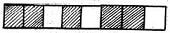
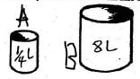
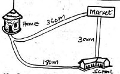
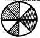
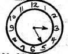
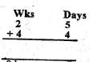
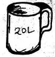
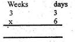
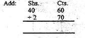

1. Write sixteen thousand four hundred and four in figures?
C). 164042. What is the place value of digit 6 in 6450?
B). Thousands3. 0.4 + 0.3 = _____
C). 0.74. What fraction is unshaded?

C). 3⁄85. In Makuyu school there are 498 boys and 417 girls. How many pupils are there altogether?
D). 9156. What is the total value of digit 7 in 607?
A). 77. How many container A can fill container B?

A). 328. 1⁄8 + 3⁄8 =
A). 4⁄89. Which of these numbers is Even?
C). 18
10. Ocampo walked from his home to school and back home. What distance did he cover?
D). 360m11. Ocampo walked from his home to school through the market. What distance did he cover?
A). 660m12. In the fraction 4⁄9, which number is the denominator?
B). 913. What fraction is shaded?

B). 5⁄814. Find the sum of all the even numbers between 10 and 20?
D). 6015. What is the time?

C). 3.2516. Which of the following numbers is divisible by 2 and 5?
B). 2017. Solve

C). 7wks 2days18. 60 + 0.07 + 0.2 = _____
B). 60.2719. Convert 60 days into weeks and days.
C). 8wks 4days20. What is an odd number + even number?
B). odd21. Write 31⁄100 as a decimal
D). 0.3122. What is the next number in the sequence? 14, 16, 18, 20, 22,___________
C). 2423. Which is smaller? 1⁄14 or 1⁄16
A). 1⁄1624. What is 1⁄12 of 60?
D). 525. Willy had 4 cartons of milk. Each carton had 15 packets. How many packets did he buy?
C). 6026. How many half-litres will fill the cup shown below?

B). 4027. Round off 457 to the nearest ten
D). 46028. Add 3⁄8 + 2⁄8 + 1⁄8 =
C). 6⁄829. Add 43m 45cm to 11m 70cm
A). 55m 15cm30.
B). 42 rem 431. 6⁄7 - 5⁄7
C). 1⁄732. Work out: 467 + 426 = ____
C). 89333. James bought the following items:a book at ksh.15 and a pen at ksh.5
How much did he pay for the pen and book?
B). Shs.534.

B). 22wks 4days35. Which one of the following fractions is the smallest?
A). 1⁄636. How many 1⁄4kgs are there in 8kgs?
A). 3237. What is the missing number?
___ x 8 = 72
B). 938. What is 5/12 in words:
D). five twelfths39. In a school there are 157 pupils in a class one and 123 pupils in class two. What is the total number of pupils in the two classes?
A). 28040. Fill the blank space: ___ x 5 = 60
C). 1241. Divide 108 by 3.
D). 3642. Mr.Nyakach had 94 hens. If 45 of them died, how many were left?
D). 6943. Add: 34567 + 29453 + 235 =
C). 6425544. There are 693 fruits in a basket of which 257 are mangoes. How many are oranges?
B). 43645. How many hours are there in ten days
A). 24046.

A). Shs.43 30cts.47. Which is heavier? sand or sugar
A). Sand48. Add: 1246 + 5237 + 2245 = ____
B). 872849. There are 15 packets of salt in a carton. How many packets will be there in 6 cartons?
A). 9050. Change 480 minutes into hours?
C). 8hrs